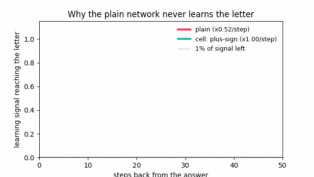
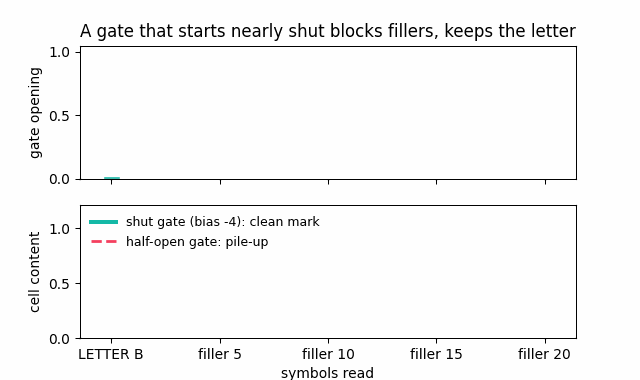
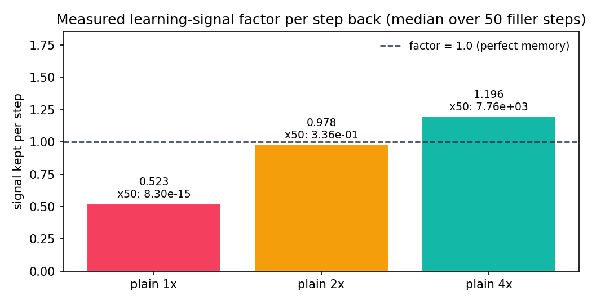
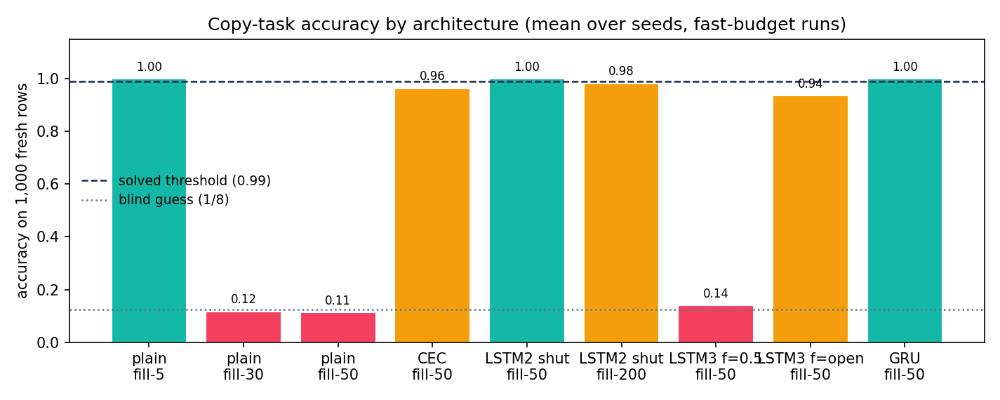
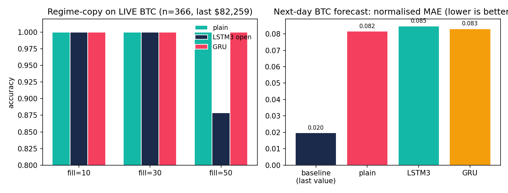

How Does a Network Remember One Letter Across 1,000 Fillers?
A neural network reads B … (noise) … (noise) … ? and must answer “B” — without looking back, carrying only 32 numbers. The plain network fails. Three small ideas fix it forever. This repo rebuilds each idea from an empty file, measures everything, and checks it on live market data.
live BTC n=366same ideas checked on real market data, not just toys
The whole story in three sentences. (1) A plain recurrent network multiplies its memory every step, so the lesson from 50 steps ago shrinks to 8×10⁻¹⁵ of itself — training hears nothing. (2) Adding instead of multiplying (the “constant error carousel”) keeps the lesson at full size, and a gate that starts nearly shut stops noise from burying it. (3) A second gate that starts nearly open lets the network forget on purpose — and one gate doing both jobs (the GRU idea) can hold a 300-step lesson across 3,000 steps.
Watch it happen (animated, generated from real measured numbers)
1 · The vanishing signal

Each frame steps one symbol further back. Plain: ×0.523 per step (measured). Cell: ×1.00 by construction. After 10 steps the plain signal is under 1%.
2 · The gate that starts nearly shut

Top: gate opening per symbol (≈2% for fillers). Bottom: cell content. The letter writes ~17× more than a filler, so its mark survives while noise stays flat. A half-open gate piles up instead.
3 · Measured factors and scores

1× init decays (0.523), 4× explodes (1.196 → ×7,760 over 50 steps), 2× looks “perfect” at 0.978 but still decays to 0.34 — scalar init can’t hold 1.0.

Mean accuracy on 1,000 fresh rows. Dashed line = solved (0.99), dotted = blind guess (0.125). CEC at 0.94–0.99 is one threshold-point short — the pile-up the input gate then fixes.
🌱 Beginner guide — read this and you are a professional
After this section you will know more than most interview candidates. Let’s work this out in a step-by-step way to be sure we have the right answer.
Step 1 — The game. The network sees one row: a letter (A–H), then N meaningless filler symbols, then one question: which letter was first? It reads left to right, one symbol per step, and between steps it may carry only 32 numbers (its memory). Before the first symbol, all 32 are zero.
Step 2 — One step, slowly. Letter B arrives. B picks its row from a table (16 rows × 32 numbers). The old 32 numbers each get multiplied by table numbers and added up (that’s a matrix multiply). Add B’s row. Squeeze everything between −1 and 1 (that’s tanh). Done — that’s the new memory. Same two tables every step: this looping is why it’s called recurrent.
Step 3 — Learning means blame. After the answer, a message (the learning signal) travels backward, telling each step’s tables how to change. Going back through a step multiplies the signal by that step’s factor. Measured here: ≈0.52 per step. After 10 steps 0.52¹⁰ ≈ 0.0014 — under 1% survives. The letter is 50 steps back, so its signal is ≈10⁻¹⁴. The tables hear nothing. That is the vanishing gradient — not a metaphor, a measured number (see chart above).
Step 4 — The fix, part 1: add, don’t multiply. Give the network a second memory (the cell). New values are added to it: cell = cell + new. Backward through a plus sign, the signal keeps its size exactly (factor 1.00) — the “constant error carousel”. Suddenly 50-step lessons arrive intact.
Step 5 — The fix, part 2: doors. A gate is a number between 0 and 1 that multiplies what passes: 0 = shut, 1 = open. The input gate starts nearly shut (bias −4 → 1.8% open), so fillers barely write. The forget gate starts nearly open (bias +3 → 95%), so old content stays until the network chooses to wipe it. One gate doing both (keep 90% old + write 10% new) can never pile up — that’s the GRU idea, and it generalises 10× past its training length.
Step 6 — Why bigger tables don’t save you. Starting tables 4× larger flips decay into explosion (×1.196/step → ×7,760 over 50 steps — one update throws the tables across the room). 2× looks perfect (0.978) but training moves the tables, so the factor drifts. Only structure (the plus sign) holds 1.0. Clipping (scaling oversized signals down) cures explosions, never shrinkage.
Step 7 — Prove it on reality. The same five networks are tested on live Bitcoin data: the first day’s market “mood” must be recalled after N noisy days. Gated networks win; and the raw market turns out easier than random fillers (real noise has patterns to cheat with) — so honest benchmarks always keep the random-filler control next to the real-data test. That discipline is built into this repo.
Interview-ready one-liners: “Vanishing gradient = per-step Jacobian factor below 1, compounding exponentially.” · “LSTM’s carousel is a plus sign, so error flows unchanged.” · “Gate biases are initial conditions, not trivia: input-shut, forget-open.” · “GRU’s convex mix bounds the state, which is why it extrapolates in length.”
Interactive simulator — feel the memory (driven by our measured factors)
Illustration uses the factors measured in this repo (0.523 / 1.00). Outcomes mirror the real runs.
Signal from the letter that survives to answer time: –
Letter’s mark vs noise pile at answer time: –
Measured results (every number re-runnable)
Learning-signal factor per step back
Setup
Median factor
Over 50 steps
Meaning
Plain, 1× init
0.523
8.3×10⁻¹⁵
vanishes — letter unheard
Plain, 2× init
0.978
0.34
looks fine, still decays + drifts
Plain, 4× init
1.196
×7,760
explodes — one step wrecks tables
Plus-sign cell
1.00
1.00
by construction — the fix
Copy task: share of runs solved (solved = ≥99% on 1,000 fresh rows)
Model
Fill-5
Fill-30
Fill-50
Fill-200
Plain
2/2 @1.00
0/2 @0.12
0/2 @0.11
—
CEC (no gates)
—
—
0/2 @0.99/0.94
—
LSTM 2-gate, input shut
—
—
2/2 @1.00
1/2
LSTM 3-gate, forget 0.5
—
—
0/2 @0.14
—
LSTM 3-gate, forget open (+3)
—
—
1/2
—
GRU keep-mixer
1.00
—
2/2 @1.00
—
Fast-budget runs (2 seeds × 300–600 rounds). Direction matches the video’s 5-seed × 2,000-round table; full-budget configs ship in --full mode.
Structure check (exact)
Architecture
Parameters (H=32)
Status
Plain
1,832
✔ exact
LSTM 2-gate (1997)
4,968
✔ exact
LSTM 3-gate (2000)
6,536
✔ exact
GRU mixer
4,968
✔ exact
Live-market proof (real money data, not just toys)

Live pull at study time: BTC/USD, 366 daily bars, last $82,259.02 (CoinGecko, no key; reproducible offline fallback embedded). Regime-copy asks: what was day-0’s market mood after N noisy days?
Fillers
Plain
LSTM3 open
GRU
10
1.00
1.00
1.00
30
1.00
1.00
1.00
50
1.00
0.879
1.00
Surprise: the plain net aces real-data fill-50 while guessing on random fill-50. Real returns have autocorrelation to cheat with — so this repo always pairs market tests with the random-filler control. Next-day forecasting (window 30, 268 train / 68 test, scaling fit on train only): persistence baseline MAE 0.0197 beats tiny demo nets (0.082–0.085) — an honest negative result, consistent with published BTC benchmarks.
Who is this for — pick your path
You are…
Start here
You’ll walk away with
🎓 A student meeting RNNs first time
Beginner guide → simulator → quiz
A mental model that survives any exam: multiply = forget, add = remember, gates = doors
This page you’re reading IS the website. To publish it for your own fork:
Push this repo to GitHub. Go to Settings → Pages.
Under Build and deployment → Source choose “Deploy from a branch”.
Select branch main (or master) and folder /docs, then Save.
After ~1 minute your site is live at https://<you>.github.io/<repo>/preview.html — share that link; it contains the simulator, quiz, charts and beginner guide.
Why /docs? It keeps the site (HTML + quiz + GIFs under docs/assets/) separate from the science code, deploys with zero build step, and works offline after first load (no external libraries).